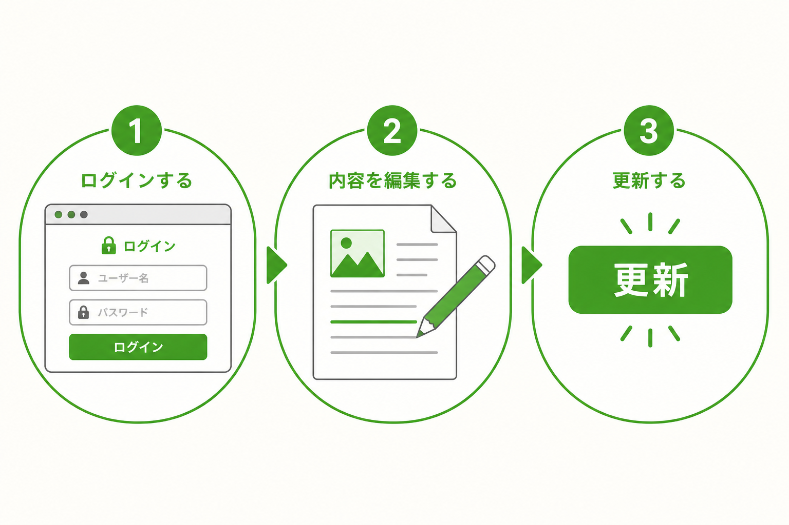

サイトの直し方（お客様向け）
レイアウトはそのままで大丈夫です。直すのは主に「文章」「写真」「作品」です。

A. ログイン
- ブラウザで管理画面のURLを開く（お渡し時にお伝えします）
- ユーザー名とパスワードを入力する
- ログイン後、サイトを表示すると上部に黒いバーが出ます
パスワードはチャットやメールの本文に書かないでください。分からなくなったら制作者へ連絡してください。
B. トップの写真・色・文字サイズ
- 上部バーの「カスタマイズ」を押す
- 「見た目の設定」を開く
- 文字色／背景色／文字サイズ／フォント／ヒーロー画像／プロフィール写真を変更
- 右上の「公開」で反映
ここまでで足りることが多いです。
C. 作品（Works）を直す

- 管理画面で「Work」（作品）を開く
- 直したい作品を選ぶ（または新規追加）
- タイトル・説明・アイキャッチ画像を直す
- 「更新」または「公開」を押す
D. 固定ページ（料金の詳細など）
- 管理画面の「固定ページ」を開く
- 直したいページを選ぶ
- 文字を直して「更新」
E. 問い合わせが届くか確認したいとき

- 公開サイトの Contact までスクロール
- 自分の名前・メールで短いテストを送る
- 届いたメールを確認（迷惑メールも見る）
触らなくてよいもの
- プラグインの削除・追加
- テーマファイルの直接編集
- サーバー設定・ドメイン設定